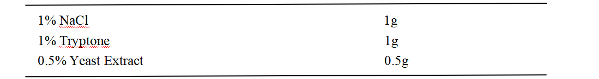
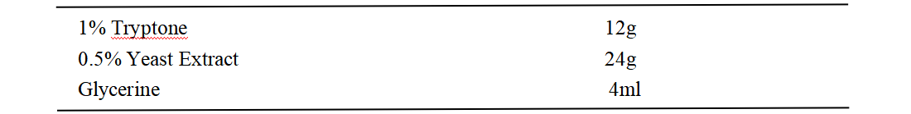
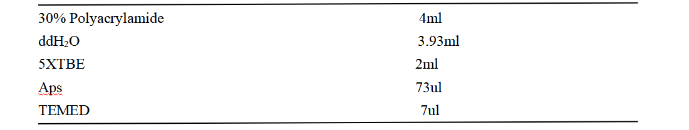
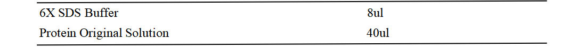
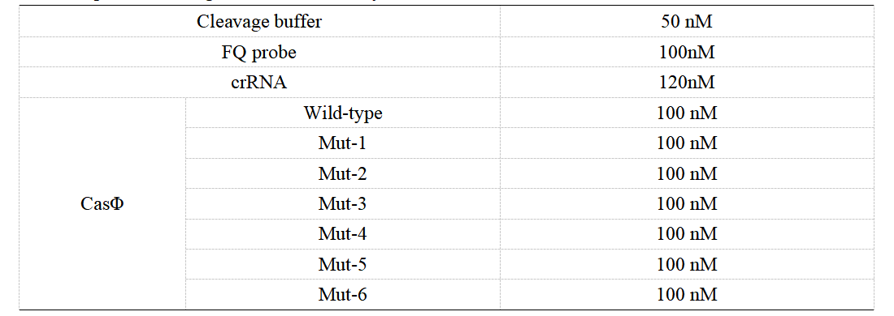
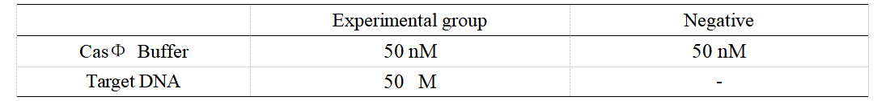
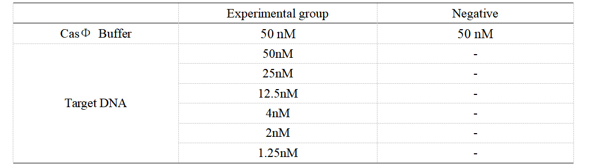
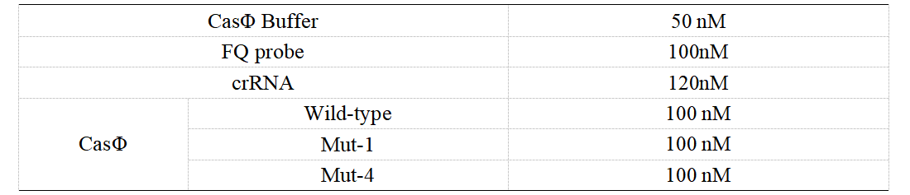
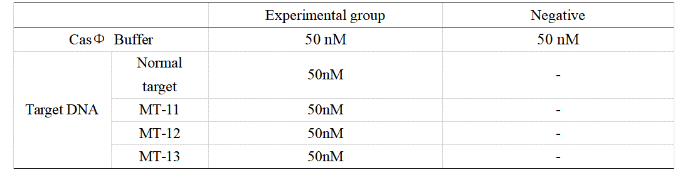

Result wet lab
The ssDNA cleavage activity of mutants
Strains inoculation
1. Turn on the ultra-clean table UV lamp for 30 min in advance, and set the shaker speed and temperature at 220rpm and 37 ℃.
2. Open the sterilized culture medium, add 50 μL of kanamycin stock solution (30 mg/mL) to the conical flask, and shake for a thorough mix.
3. Take 7 mL of LB culture medium to the test tube.
4. Add about 30 μL of -80 ℃ lyophilized monoclonal strain into the test tube with 7 mL of culture medium.
5. Put the test tube inside the shaker and set the parameter at 37 ℃, 220 rpm for an overnight incubation, which is about 12 hr.
6. Store the culture medium at 4 ℃.
100 mL LB medium formulation

2. Open the sterilized culture medium, add 50 μL of kanamycin stock solution (30 mg/mL) to the conical flask, and shake for a thorough mix.
3. Take 7 mL of LB culture medium to the test tube.
4. Add about 30 μL of -80 ℃ lyophilized monoclonal strain into the test tube with 7 mL of culture medium.
5. Put the test tube inside the shaker and set the parameter at 37 ℃, 220 rpm for an overnight incubation, which is about 12 hr.
6. Store the culture medium at 4 ℃.
100 mL LB medium formulation
Expanded culture
1. Remove the test tube from the shaker and place it on the ultra-clean table.
2. Take out the test tube containing the bacterial fluid and transfer 1-2 mL of it into a conical flask containing the sterilized TB culture medium.
3. Repeat the procedures with the other test tube and the conical flask.
4. Place the two conical flasks in the shaker and set the parameter at 37 ℃, 220 rpm incubation, about 3-4 h,OD=0.6.
5. Preserve the strain.
900 mL TB medium formulation

2. Take out the test tube containing the bacterial fluid and transfer 1-2 mL of it into a conical flask containing the sterilized TB culture medium.
3. Repeat the procedures with the other test tube and the conical flask.
4. Place the two conical flasks in the shaker and set the parameter at 37 ℃, 220 rpm incubation, about 3-4 h,OD=0.6.
5. Preserve the strain.
900 mL TB medium formulation
IPTG induction
1. Take out the conical flasks from the shaker and put them into the ultra-clean table together with IPTG.
2. Add 0.5nM IPTG under the surface of the culture medium and repeat the procedure.
3. Place the conical flasks back into the shaker and incubate at 16 ℃, 220 rpm for 16 h.
2. Add 0.5nM IPTG under the surface of the culture medium and repeat the procedure.
3. Place the conical flasks back into the shaker and incubate at 16 ℃, 220 rpm for 16 h.
Collection
1. Centrifuge the bacterial fluid and discard the supernatant.
2. Add 5mL of 20mM imidazole respectively and mix well with blowing. Then transfer them to the same tube.
3. Add 200ul PMSF.
4. Preserve it at -80°C.
2. Add 5mL of 20mM imidazole respectively and mix well with blowing. Then transfer them to the same tube.
3. Add 200ul PMSF.
4. Preserve it at -80°C.
The trans-cleavage activity of mutants
Ultrasonication
1. Take out the bacteria and melt it at room temperature.
2. Place the tube that contains the bacterial fluid in a beaker and bathe it with ice water. Then sonicate the tube until the bacterial fluid is clear.
2. Place the tube that contains the bacterial fluid in a beaker and bathe it with ice water. Then sonicate the tube until the bacterial fluid is clear.
Centrifugation
3. Centrifuge the bacterial fluid (10000×g, 30min).
Pass through Ni column
4. Equilibrate the Ni column with distilled water and then binding buffer.
5. Elute the protein with 20mM, 30mM, 60mM, 150mM, and 300mM imidazole respectively, and collect it at the end.
6. Ascertain the result of protein purification by PAGE electrophoresis.
12%PAGE Glue Formulation

5. Elute the protein with 20mM, 30mM, 60mM, 150mM, and 300mM imidazole respectively, and collect it at the end.
6. Ascertain the result of protein purification by PAGE electrophoresis.
12%PAGE Glue Formulation
PAGE sample system configuration

Ultrafiltration
7. Using a 10 KDa ultrafiltration tube, add the collection solution (placed on an ice box) (Max=400 μL) and centrifuge at high speed (4 °C, 12000 × g, 4 min).
8. Discard the effluent, add the collection solution to the ultrafiltration tube, and repeat these steps until the entire collection solution is ultrafiltered.
9. Add protein diluent into the ultrafiltration tubes, blow and mix, and ultrafiltrate it. Repeat three times.
10 Bradford method for concentration measurement.
11. Sub-pack the solution and store at -80°C.
8. Discard the effluent, add the collection solution to the ultrafiltration tube, and repeat these steps until the entire collection solution is ultrafiltered.
9. Add protein diluent into the ultrafiltration tubes, blow and mix, and ultrafiltrate it. Repeat three times.
10 Bradford method for concentration measurement.
11. Sub-pack the solution and store at -80°C.
Specificity for single-base difference
1. Set up the following 20 μl incubation system:

Dissolved in ddH2O, the mixture was incubated at 37℃ for 30min.
2. Add following reagents to each protein reaction system after incubation to the certain concentration, and the volume of the overall system is 60ul:

3. Evenly mix the system and add it to 96-hole plates, 20 μl for each hole. Fluorescence signals were obtained every 2 minutes at 37°C.
Effect of crRNA secondary structure on specificity of CRISPR-Cas system
1.Set up the following 20 μl incubation system:
Dissolved in ddH2O, the mixture was incubated at 37℃ for 30min.
2.Add following reagents to each protein reaction system after incubation to the certain concentration, and the volume of the overall system is 60ul:

Dissolved in ddH2O, the mixture was incubated at 37℃ for 30min.
2.Add following reagents to each protein reaction system after incubation to the certain concentration, and the volume of the overall system is 60ul:
3. Evenly mix the system, add it to 96-hole plates, 20 μl for each hole. Fluorescence signals were obtained every 2 minutes at 37°C.
Performance of optimized system for DNA mutation detection
1. Set up the following 20 μl incubation system:

Dissolved in ddH2O, the mixture was incubated at 37℃ for 30min.
2. Add following reagents to each protein reaction system after incubation to the certain concentration, and the volume of the overall system is 60ul:

3. Evenly mix the system, add it to 96-hole plates, 20 μ l for each hole. Fluorescence signals were obtained every 2 minutes at 37°C.